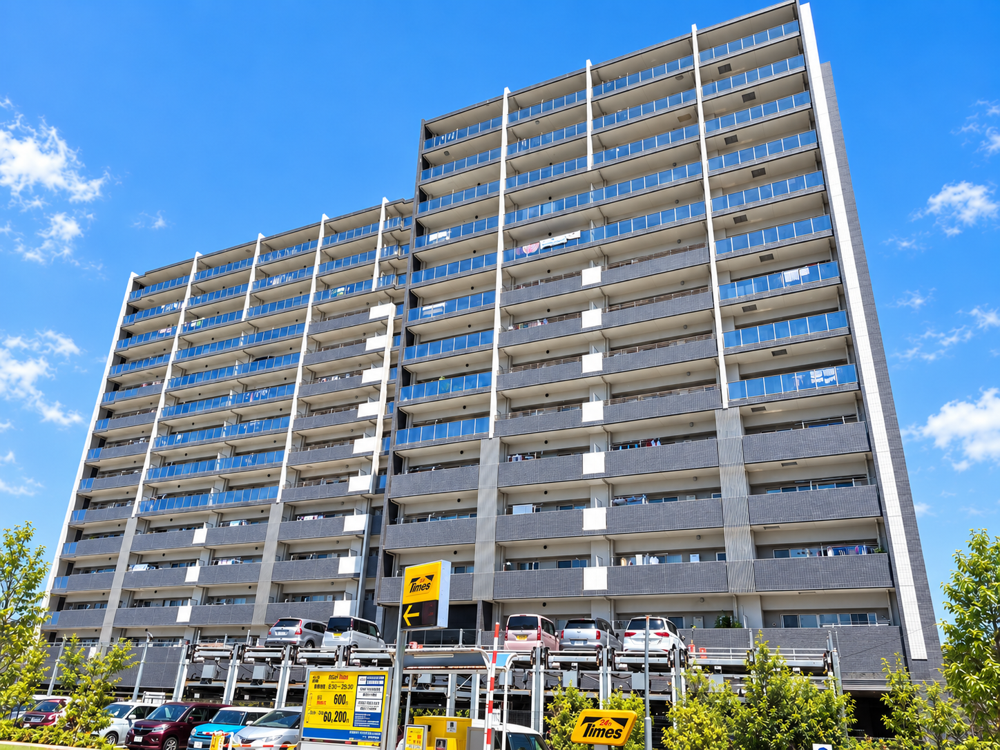
現地条件を、工事の難しさではなく「日常と同時に動くもの」として捉えます。
鉄筋コンクリート造
居住者様の生活を止めない
機械式116台＋平置11台
自転車254台＋バイク14台
128戸の居住者様の生活、車両、自転車、バイク、歩行者動線への影響を可能な限り抑える。
調査 → 数量化 → 試験 → 協議 → 承認 → 本施工のプロセスを守る。
安全環境部、工事、積算、営業、アフターが会社として現場を支える。
キックオフで、仮設・工程・居住者対応・品質・安全を同じ地図に載せます。
キックオフチェックリストに沿って前提をそろえる。
居住者導線、トラック、荷揚げ位置まで確認。
使用材料予定数量表と検査の位置を入れる。
2週間工程、当日・翌日予定、洗濯物情報を掲示。
計画位置は組合様協議の上で決定する。
着工前に、現場で起きる「迷い」を減らしておく。これが、暮らしを止めないための最初の施工です。
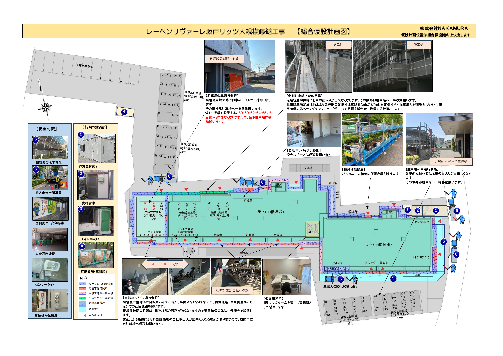
安全通路確保・暗証番号仮設扉・迂回通路
駐車車両の移動・出入口での移動対応
西側通路・南東側通路へ迂回
仮設事務所・資材倉庫・産廃置場・植栽仮置場
この計画図にない情報を勝手に足すのではなく、現地で確認し、管理組合様と協議して確定します。
足場・車両・自転車・歩行者・資材・廃材を、ひとつの計画として運用します。
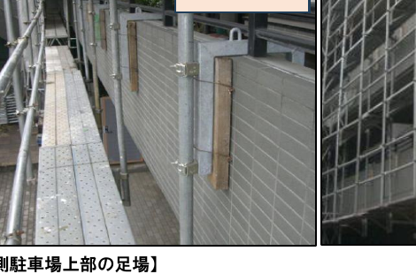
駐車車両、自転車・バイク、植栽、キッズルームの一時利用まで、現場の外にある日常も計画に入れます。
計画位置は組合様協議の上決定朝顔・水平養生、搬入出安全誘導員、金網養生、安全標識、安全通路、センサーライトを計画図に置く。
駐車車両・自転車・バイク
植栽・既存設備・ガラス
工事車両・資材搬入
暗証番号仮設扉・センサーライト
地上からの梁枠開口足場では、お車の出入が困難になる。
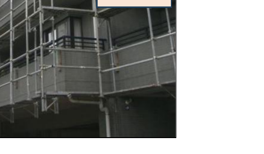
北側車路の有効幅、梁枠開口、柱部の通路を現地で確認。
ベランダキャッチャー等の支持条件と安全性を確認。
お車の出入・工事車両・搬入方法を含めて協議。
足場専門業者・監理者・管理組合様との確認を経て、最終計画へ進みます。
足場設置後の全面調査で、見えるものを増やし、補修範囲を数量化します。
近接できる状態をつくる。
浮き・剥離・脆弱部を確認。
現場と図面を対応させる。
面別・工種別に整理。
調査結果を報告して進む。
マークと補修図を照合する。
補修範囲と数量を見える化する。
後から説明できる形で残す。
工程表に設定された確認タイミングを、管理組合様・監理者様と共有する「止まる場所」として運用します。
見えていなかった劣化を、近接調査で確認。
報告する調査図・数量・写真・金額を整理。
協議するタイル・リシン等の基準を決める。
承認する見えなくなる前に、最終状態を確認。
是正する金額・仕上がり・書類を確認。
引き渡すここで一度止まり、報告し、確認・承認を得てから次へ進む。
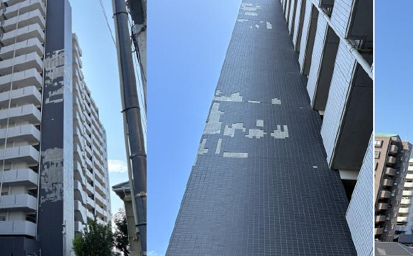
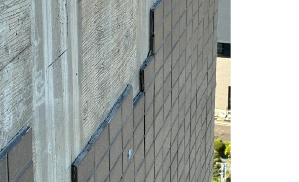
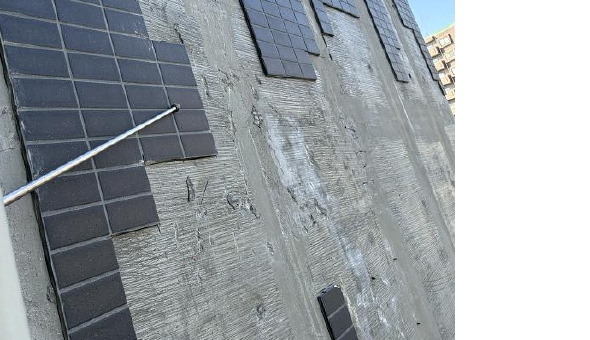
吸水調整剤が残っている可能性、既存タイル周囲の浮き、打継目地を確認。
付着を妨げる要因を整理し、目荒らし・清掃・試験施工へつなげる。
数量・最終補修範囲は全面調査後、協議・承認を経て確定。
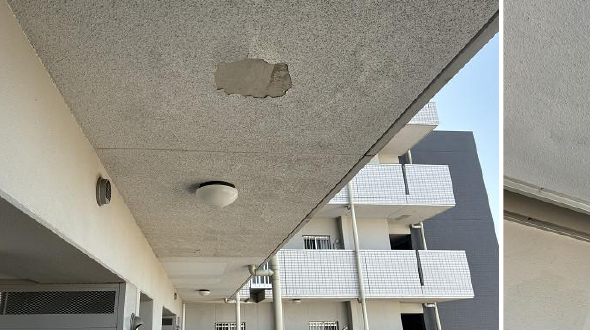
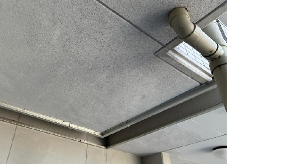
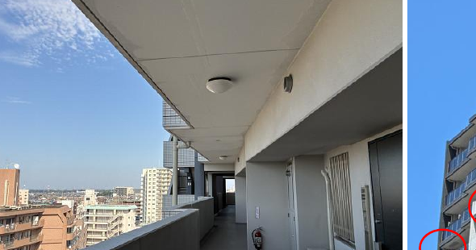
資料では上層階軒天に塗膜浮き・剥離と過去補修跡が確認されています。足場設置後に状態を確定し、目地スパン単位で整理します。
「浮いている箇所だけ」ではなく、下地・意匠・再発の可能性を確認してから、本施工へ進みます。
現場のマーキングと補修図を合わせ、面別数量・被害写真を記録。
タイル貼り等は施工前に試験施工し、引張接着力試験を実施。
施工条件、希釈、塗布量、膜厚など仕上がりを左右する記録を残す。
シーリング充填状況、防水端末、自主・社内・監理者検査と是正確認。
現場内部だけでは気づきにくいリスクを、現場の外側から確認。是正支援と再確認を行い、代理人一人の視野に依存しません。
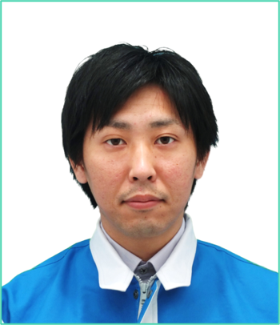
代表実績：シティタワー有明（33階・483戸）、プラウド新浦安パームコート（14階・550戸）、グランエスタ（20階・671戸）ほか。
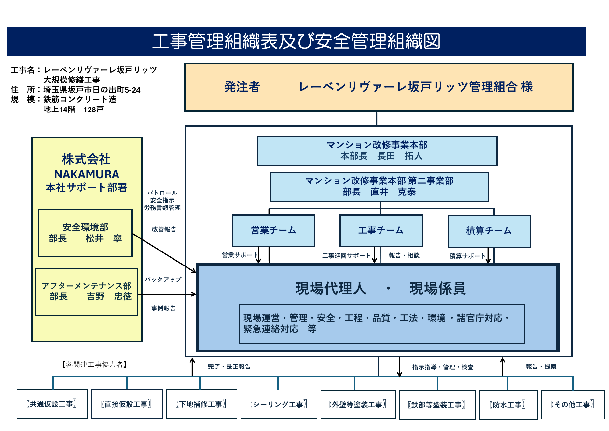
「協議の上決定」「別途精算」等の原文表現に沿って扱います。
調査結果、数量、単価・金額を一つずつ確認できる状態にします。
追加・変更は、報告・協議・承認の後に施工します。
明治3年創業。マンション改修・建築・エネルギープラント・工場生産の4事業本部を展開し、技術共有と現場支援につなげる。